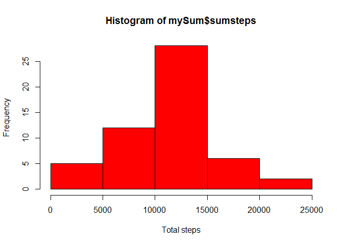
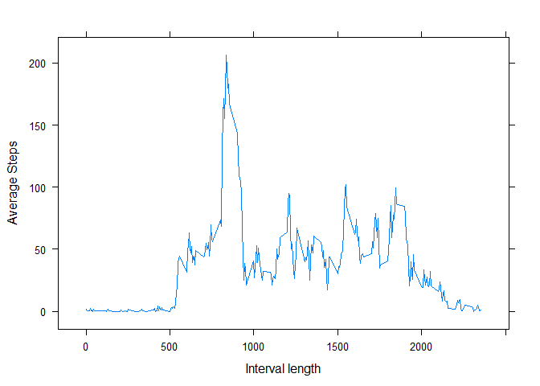
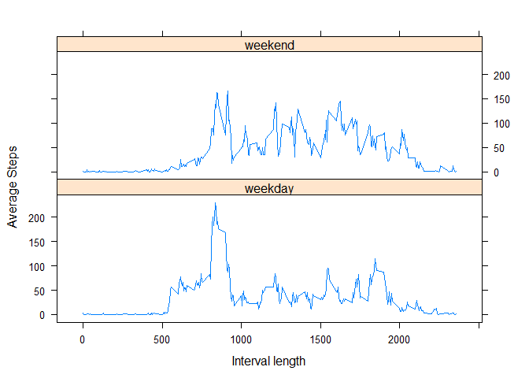

Reproducible Research: Peer Assessment 1
Getting ready
The following code loads some of the libaries used in the project, namely dplyr to transform data and lattice for the lattice plotting system.
library(dplyr)##
## Attaching package: 'dplyr'## The following objects are masked from 'package:stats':
##
## filter, lag## The following objects are masked from 'package:base':
##
## intersect, setdiff, setequal, unionlibrary(lattice)Loading and preprocessing the data
To start the explorative analysis the data in activity.csv is loaded into the myData data frame.
unzip("activity.zip", overwrite = TRUE)
myData<-read.csv("activity.csv")Next the data in the column date is converted into the Date datatype using the as.Date function.
myData$date<-as.Date(myData$date,"%Y-%m-%d")The data is now ready for analysis and processing.
What is the mean total number of steps taken per day?
First we answer the question what the total number of steps per day taken is. For that we use the %>% operator to chain a few dplyr package commands together. We first group the data by the date and then sum the steps for each day and store the result in the mySum data frame.
mySum <- myData %>% group_by(date) %>% summarise(sumsteps=sum(steps))With the data in mySum we can draw a histogram of the sumsteps
hist(mySum$sumsteps, col="red", xlab="Total steps", ylab="Frequency")
Furthermore we can calcuate both the mean and the median of the data set by ensuring to ignore NA values with the na.rm = TRUE option.
mean(mySum$sumsteps,na.rm = TRUE)## [1] 10766.19median(mySum$sumsteps,na.rm = TRUE)## [1] 10765What is the average daily activity pattern?
Next we analyze the average daily activity pattern. We use the tools of dplyr and the %>% command to calculate the average steps per interval by ignoring the NA values. The result is stored in data frame myAvgSteps. We use xyplot from the lattice package to plot the average steps over the interval length as line plot.
myAvgSteps <- myData %>% group_by(interval) %>% summarise(avgSteps=mean(steps,na.rm=TRUE))
xyplot(avgSteps ~ interval, data=myAvgSteps, type="l", xlab="Interval length", ylab="Average Steps")
Next we find the maximum average daily activity interval.
myAvgSteps[which.max(myAvgSteps$avgSteps),]## # A tibble: 1 x 2
## interval avgSteps
## <int> <dbl>
## 1 835 206.1698Imputing missing values
Before imputing missing values in the data set we calculate the number of records in the daat set that have NA for the steps column.
sum(is.na(myData$steps))## [1] 2304The startegy to impute the missing values is to take the mean of all records of the same interval accross all days and replace the NA value with the mean of that group. For that we first copy the data frame myData to a new data frame myData2. Next we use the function ave to calculate the average per group defined by the variable interval while ignoring the NA values. We assign the group-wise calculated mean of NA steps rows in the dataset to the steps variable with NA values.
myData2<-myData
myData2$steps[is.na(myData2$steps)]<-ave(myData2$steps,myData2$interval,FUN=function(x) mean(x,na.rm = TRUE))[is.na(myData2$steps)]Next we repeat the calculation of the total number of steps by grouping the new dataset by date. We use the newly calculated sum in data frame mySum2 to recreate a histogram as before and recalulate both mean and median.
mySum2 <- myData2 %>% group_by(date) %>% summarise(sumsteps=sum(steps))
hist(mySum2$sumsteps, col="red", xlab="Total steps", ylab="Frequency")
mean(mySum2$sumsteps,na.rm = TRUE)## [1] 10766.19median(mySum2$sumsteps,na.rm = TRUE)## [1] 10766.19We see that the histogram changes in having a higher frequency in the median. The mean and the median are now the same value. The imputing of the data has lead to the dataset be more ‘compacted’ towards the median. We can also see this by calculating the standard deviation from before imputing and after. The standard deviation of the data set after imputing is smaller than before.
sd(mySum$sumsteps,na.rm = TRUE)## [1] 4269.18sd(mySum2$sumsteps,na.rm = TRUE)## [1] 3974.391Are there differences in activity patterns between weekdays and weekends?
Finally we add a factor variable to the new data set myData2 to indicate the weekday or weekend of the date. we add a factor with two levels and store it in the variable wd. We set the default variable to weekday and find all instance of the data where the weekdays function returns Saturday or Sunday and set the wd to weekend.
myData2$wd<-factor(c("weekday","weekend"))
myData2$wd="weekday"
myData2[(weekdays(myData2$date)=="Saturday") | (weekdays(myData2$date)=="Sunday"),4]<-"weekend"With this data we now use the dplyr tools to group the data by wd and interval and calculate the average steps per group before using xyplot from the lattice paqckage to plot a panel plot of average steps over interval lengths grouping teh data by the factor of weekday/weekend.
myAvgSteps2 <- myData2 %>% group_by(wd, interval) %>% summarise(avgSteps=mean(steps,na.rm=TRUE))
xyplot(avgSteps ~ interval | wd, data=myAvgSteps2, layout=c(1,2), type="l", xlab="Interval length", ylab="Average Steps")
This concludes the anaylses for this project.